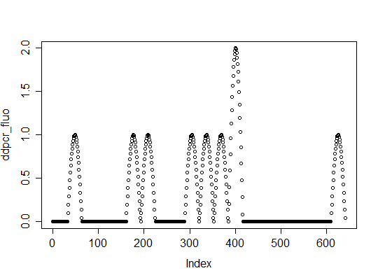

"ddpcr"A class specifically designed to contain results from droplet digital PCR
experiments. Data is represented as matrix, where each column describes
different experiment. Type of data in all columns is specified in
slot "type". Inherits from dpcr.
For more in-depth explanation of digital PCR data structure, see
dpcr.
thresholdnumeric value giving the threshold. Partition with the value equal or
bigger than threshold are considered positive.ddpcr_fluo <- sim_ddpcr(m = 10, n = 20, times = 5, fluo = list(0.1, 0)) plot(ddpcr_fluo)
ddpcr <- sim_ddpcr(m = 10, n = 20, times = 5)
bind_dpcr,
extract_dpcr, plot_vic_fam.
Simulation: sim_ddpcr.
Array digital PCR: adpcr.